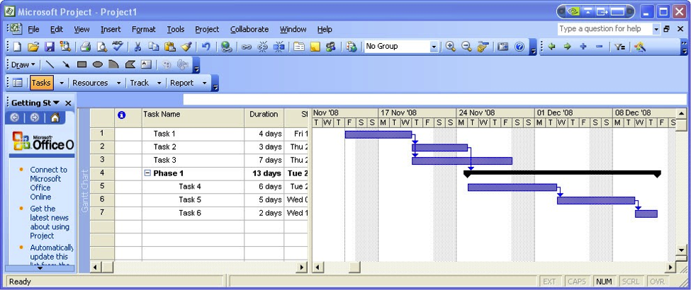

GERENCIAMENTO DE PROJETOS DE SOFTWARE, ESTIMATIVAS E MÉTRICAS DE PROJETOS DE SOFTWARE E GERÊNCIA DE CONFIGURAÇÃO DE SOFTWARE
1 GERENCIAMENTO DE PROJETOS DE SOFTWARE
1 INTRODUÇÃO
Independente do ramo de atuação em que as organizações estão inseridas, o mercado está se tornando cada vez mais complexo, exigindo mudanças rápidas e fazendo com que novas estratégias de forma consciente, ou mesmo inconsciente, sejam desenvolvidas no intuito de melhorar o desempenho no gerenciamento de projetos de Software.
Um projeto é composto por várias etapas, e cada etapa deve ser muito bem administrada. Em um mundo globalizado, onde a concorrência é cada vez mais acirrada, a gestão desses empreendimentos de forma eficiente pode representar um diferencial competitivo. Para que isso seja possível, investimentos com projetos se torna algo fundamental para obter êxito exigindo-se conhecimento de planejamento, bem como técnicas e ferramentas para colocar em prática uma gestão eficaz.
O gerente de projetos deve ser uma pessoa bastante capacitada, atendendo aos requisitos necessários, para que fique à frente do projeto e consiga efetuar uma boa gerência, evitando possíveis erros.
Para que um projeto de software seja bem-sucedido, é necessário que alguns parâmetros sejam corretamente analisados, como por exemplo, o escopo do software, os riscos envolvidos, os recursos necessários, as tarefas a serem realizadas, os indicadores a serem acompanhados, os esforços e custos aplicados e a sistemática a ser seguida (PRESSMAN, 1995).
2 DEFINIÇÃO DE PROJETO
Segundo o site do Project Management Institute – PMI (2015), projeto é um conjunto de atividades temporárias no sentido de que tem um início e fim definidos no tempo, realizadas em grupo, destinadas a produzir um produto, serviço ou resultado único.
Além de definir o projeto como algo temporário, com sequência de atividades com início, meio e fim, Carvalho e Rabechini Jr. (2011) ressaltam que seu resultado final fornece um produto ou serviço único e progressivo, tangível ou intangível limitado a restrições de tempo e custo.
Por maior que seja o tempo de seu desenvolvimento, um projeto não dura para sempre. Terá fim assim que seus objetivos sejam alcançados ou quando se chegar à conclusão de que estes objetivos não serão ou não poderão mais ser atingidos. Embora um projeto seja temporário, seu resultado tende a ser duradouro ou permanente, podendo ser classificados também como resultados tangíveis ou intangíveis.
Um projeto é único, pois mesmo que já tenha sido executado anteriormente ao ser colocado em prática novamente, o cenário envolvido (necessidades, pessoas, tecnologias) já mudou. A realidade do projeto atual já é outra em decorrência das mudanças ocorridas.
É considerado como progressivo, pois à medida que temos mais conhecimento sobre ele, vamos elaborando-o progressivamente, melhorando o seu detalhamento e as particularidades que o definem como único. Mas, podemos dizer que a característica de destaque de um projeto é o risco, pois nunca podemos ter a certeza de que o mesmo será bem-sucedido.
Vale destacar que projetos das mais variadas naturezas enfrentam os mesmos problemas ao redor do mundo. Entre os principais problemas que os projetos enfrentam, podemos citar: atrasos nos prazos, estouro de orçamento, falta de qualidade nas entregas, falta de motivação da equipe e ocorrência de eventos inesperados ao longo da execução do projeto.
Cada projeto possui um ciclo de vida, que ajuda a definir o início e término de cada etapa, o que deve ser realizado e por quem deve ser executado (matriz de responsabilidade do projeto). Serve para dar alicerce ao tripé de sucesso dos projetos: TEMPO/CUSTO/ESCOPO. A entrega do escopo deve ser feita no prazo estipulado, dentro do orçamento apontado, com nível de qualidade atendendo às necessidades do cliente comprador (VARGAS, 2009).
TRIPÉ DE SUCESSO DOS PROJETOS
3 GERÊNCIA DE PROJETOS
Segundo o site do Project Management Institute – PMI (2015), projeto é um conjunto de atividades temporárias no sentido de que tem um início e fim definidos no tempo, realizadas em grupo, destinadas a produzir um produto, serviço ou resultado único.
Além de definir o projeto como algo temporário, com sequência de atividades com início, meio e fim, Carvalho e Rabechini Jr. (2011) ressaltam que seu resultado final fornece um produto ou serviço único e progressivo, tangível ou intangível limitado a restrições de tempo e custo.
Por maior que seja o tempo de seu desenvolvimento, um projeto não dura para sempre. Terá fim assim que seus objetivos sejam alcançados ou quando se chegar à conclusão de que estes objetivos não serão ou não poderão mais ser atingidos. Embora um projeto seja temporário, seu resultado tende a ser duradouro ou permanente, podendo ser classificados também como resultados tangíveis ou intangíveis.
Um projeto é único, pois mesmo que já tenha sido executado anteriormente ao ser colocado em prática novamente, o cenário envolvido (necessidades, pessoas, tecnologias) já mudou. A realidade do projeto atual já é outra em decorrência das mudanças ocorridas.
É considerado como progressivo, pois à medida que temos mais conhecimento sobre ele, vamos elaborando-o progressivamente, melhorando o seu detalhamento e as particularidades que o definem como único. Mas, podemos dizer que a característica de destaque de um projeto é o risco, pois nunca podemos ter a certeza de que o mesmo será bem-sucedido.
Vale destacar que projetos das mais variadas naturezas enfrentam os mesmos problemas ao redor do mundo. Entre os principais problemas que os projetos enfrentam, podemos citar: atrasos nos prazos, estouro de orçamento, falta de qualidade nas entregas, falta de motivação da equipe e ocorrência de eventos inesperados ao longo da execução do projeto.
Cada projeto possui um ciclo de vida, que ajuda a definir o início e término de cada etapa, o que deve ser realizado e por quem deve ser executado (matriz de responsabilidade do projeto). Serve para dar alicerce ao tripé de sucesso dos projetos: TEMPO/CUSTO/ESCOPO. A entrega do escopo deve ser feita no prazo estipulado, dentro do orçamento apontado, com nível de qualidade atendendo às necessidades do cliente comprador (VARGAS, 2009).
4 SUBPROJETOS, PROGRAMAS E PORTFÓLIO
Nem mesmo os melhores gerentes de projeto conseguem gerenciar sem compreender o ambiente onde se está inserido. Isso significa ter a percepção que seu projeto é uma parte importante no trabalho e entender que a compreensão da estratégia geral adotada pela organização contribui para um melhor gerenciamento do mesmo. Neste contexto os projetos podem ser compostos por três tipos de categorias: subprojetos, programas e portfólio. SUBPROJETOS, PROGRAMAS E PORTFÓLIOSProjetos grandes e de alta complexidade podem ser particionados em projetos menores facilitando assim a atividade de gerenciamento. Por exemplo podemos citar a existência de vários subprojetos para fabricação de peças específicas em cada subprojeto de um modelo de carro.
Já programas são grupos de projetos que são relacionados e gerenciados coletivamente de forma coordenada. Um exemplo de programa seria um novo sistema de satélite de comunicação com projetos para o design do satélite e das estações terrestres, construção de cada uma delas, integração do sistema e lançamento do satélite.
E o portfólio é um conjunto de projetos ou programas com objetivos afins. Um exemplo de portfólio de projetos seria o conjunto de projetos para atingir o objetivo de uma organização em reduzir a rotatividade de seus colaboradores, podendo surgir projetos associados a diferentes áreas de uma organização: Finanças, RH, Operações, Marketing etc.
No nosso exemplo, teríamos como possíveis projetos: criação de programas de bolsa de estudo para funcionários, projeto para implantação de Home Office, projeto para criação de creches, projeto para revisão da política de premiação por desempenho, projeto para implantação de política de PLR (Participação nos Lucros e Resultados), projeto para divulgação do atual Plano de Carreira, e outros. Outro exemplo, em uma empresa de desenvolvimento de software, o conjunto dos projetos do departamento de novos produtos e do departamento de manutenção pode ser considerado como o portfólio da empresa.
DIFERENÇA ENTRE PROJETOS, PROGRAMAS E PORTFÓLIO5 FASES DA GERÊNCIA DE PROJETOS
A gestão de projetos é composta por cinco fases: conceitual, definição, produção, operacional e encerramento.
Fase conceitual: o estudo de viabilidade, onde realiza o desenvolvimento da ideia do projeto, a análise dos aspectos técnicos, custo e prazo e a definição de ambientes e da avaliação dos objetivos do projeto.
Fase de definição: definição do plano do projeto, com seu custo, prazo, expectativas de desempenho técnico e a avaliação dos resultados do projeto antes que sejam empenhados grandes recursos em seu desenvolvimento.
Fase de produção: período onde os resultados do projeto são produzidos e entregues como um produto, serviço ou processo organizacional efetivo.
Fase operacional: a partir do momento que o produto existir e considerado viável em termos econômicos e práticos, valendo a pena a sua implementação e fornecendo um feedback do planejamento realizado.
Fase de encerramento: se obtém a aceitação final do cliente, o gerente do projeto irá avaliar e relatar as lições aprendidas na execução do projeto. A seguir, um modelo genérico de ciclo de vida de um projeto:
MODELO GENÉRICO DE CICLO DE VIDA DE UM PROJETO6 ESTRUTURA ORGANIZACIONAL
O Project Management Body of Knowledge – PMBOK (2014) classifica as organizações em diferentes estruturas de acordo com o grau de aderência às práticas sugeridas para a gerência de projetos.
ESTRUTURA ORGANIZACIONALAs organizações funcionais ou hierárquicas são aquelas onde praticamente todas as decisões de gerenciamento de projetos são tomadas com auxílio dos gerentes de departamento, também chamados de gerentes funcionais. Nesse tipo de organização, os gerentes funcionais têm o controle dos recursos e do orçamento do projeto, cabendo aos gerentes de projeto a realização de tarefas administrativas.
Nesta estrutura a orientação é vertical, onde as ordens vêm de cima para baixo, sendo inadequado para projetos especializados, que devem ser gerenciados horizontalmente.
ORGANIZAÇÃO FUNCIONALQuando somente o Gerente de Projetos toma as decisões referentes ao projeto, realiza os controles sobre os recursos e o orçamento do projeto. Uma desvantagem é a alocação e realocação das pessoas que compõem as equipes, uma vez que os projetos são temporários.
ORGANIZAÇÃO PROJETIZADAAs organizações matriciais ficam entre os dois extremos, dividindo-se em matriz fraca, balanceada ou forte. Quanto maior a autoridade do GP e maior o grau de aderência às práticas do PMBOK, mais à direita se enquadra a organização.
ORGANIZAÇÃO MATRICIALA organização matricial ainda pode ser dividida em:
Matricial fraca: é uma estrutura muito similar com uma organização funcional e o papel do gerente de projetos é mais parecido com a de um coordenador ou facilitador. As prioridades das atividades do projeto são baixas tendo em vista que as equipes são subordinadas aos seus respectivos departamentos de origem.
Matriz balanceada: nesta estrutura já se reconhece a necessidade de um gerente de projetos, porém com pouca autonomia sobre o projeto e seu financiamento já que ainda está sob a gestão de um gerente funcional. Numa estrutura com este modelo destaca-se o aumento considerável dos conflitos em função de que o superior não é claramente definido.
Matricial forte: é uma estrutura que se assemelha com as características de uma organização projetizada e neste caso podem ter gerentes de projetos em tempo integral com autoridade considerável e pessoal administrativo trabalhando para o projeto em tempo integral. Neste modelo, as equipes estão mais comprometidas com o projeto e a prioridade dos projetos dentro da organização é alta.
INFLUÊNCIAS ORGANIZACIONAIS NOS PROJETOS7 GERÊNCIA DE RISCOS
A missão da gerência de riscos é identificar riscos e buscar mecanismos que possam atenuar ou, até mesmo, eliminar os riscos do projeto. A análise e gestão de risco são ações que ajudam uma equipe de software a entender e gerenciar a incerteza. Independentemente do resultado, é aconselhável identificá-lo, avaliar sua probabilidade de ocorrência, estimar seu impacto e estabelecer um plano de contingência caso o problema realmente ocorra.
Quem faz a gerência de riscos são todos os envolvidos na gestão de qualidade: gerentes, engenheiros de software e demais interessados. A análise é muito importante, pois evita que estes erros ocorram, sendo este um elemento primordial no gerenciamento de projeto de software.
Nascimento (2003) destaca que os riscos podem ser de três naturezas: riscos de projeto, de produto ou de negócios.
Riscos de projeto: eles ameaçam o plano do projeto, isto é, se os riscos do projeto se tornarem reais, é possível que o cronograma fique atrasado e os custos aumentem. Os riscos de projeto identificam problemas potenciais de orçamento, cronograma, pessoal, recursos, clientes, e requisitos e seu impacto sobre o projeto de software.
Riscos técnicos: ameaçam a qualidade e a data de entrega do software a ser produzido. Se um risco técnico potencial se torna realidade, a implementação pode se tornar difícil ou impossível. Os riscos técnicos identificam problemas potenciais de projeto, implementação, interface, verificação e manutenção. Além disso, a ambiguidade de especificações, a incerteza técnica, a obsolência técnica e a tecnologia “de ponta” também são fatores de risco.
Riscos técnicos ocorrem porque o problema é mais difícil de resolver do que se pensava. Riscos de negócio: eles ameaçam a viabilidade do software a ser criado e muitas vezes ameaçam o projeto ou o produto.
Os candidatos aos cinco principais riscos de negócio são: (1) criar um excelente projeto ou produto ou sistema que ninguém realmente quer (risco de mercado); (2) criar um produto que não se encaixe mais na estratégia geral de negócios da empresa (risco estratégico); (3) criar um produto que a equipe de vendas não sabe como vender (risco de vendas); (4) perda de suporte da alta gerência devido à mudanças de profissionais (risco gerencial); e (5) perda do orçamento ou do comprometimento dos profissionais (riscos de orçamento). A gestão de riscos, compreende resumidamente quatro etapas:
Identificação de riscos onde se busca identificar riscos de projeto ou de negócios. Para cada risco identificado, associa-se uma magnitude de risco que serve para indicar o grau de severidade e, portanto, de prioridade de tratamento do risco.
Análise de risco que visa obter a probabilidade de ocorrência do risco e correspondente impacto sobre o projeto. Note que o impacto pode ser o atraso no projeto, que é tanto indesejável ao cliente quanto implica em custo adicional.
Administração de risco que tem duas metas: (a) desenvolver uma estratégia de controle que serve para mitigar ou reduzir o impacto de um risco, e (b) elaborar um plano de contingência o qual recomenda as decisões (alternativas) a serem tomadas caso o risco aconteça.
Monitoração de risco que faz uso de indicadores com o objetivo de monitorar e detectar a ocorrência ou probabilidade de ocorrência de um risco.
Um risco é definido pelo PMBOK como um evento que, em caso de ocorrência, terá efeitos negativos ou positivos para pelo menos um dos objetivos do projeto. Nesse contexto, o principal objetivo da gerência de riscos é diminuir a probabilidade e impacto dos eventos negativos e aumentar a probabilidade e impacto dos eventos positivos.
Uma maneira eficiente de se identificar e registrar os riscos é fazer uma Estrutura Analítica dos Riscos (EAR), com o objetivo de categorizá-los. A EAR é uma estrutura hierárquica muito semelhante à Estrutura Analítica e Projeto (EAP) utilizada durante o planejamento do projeto, só que você a utiliza em riscos ao invés de pacotes de trabalho. Em projetos de tecnologia da informação, normalmente são utilizadas três categorias básicas: Riscos Técnicos, Riscos Externos e Riscos Organizacionais. Em seus projetos você pode partir destas três e criar mais categorias conforme a sua necessidade.
Para identificar os impactos e as probabilidades de ocorrência dos riscos, normalmente são utilizadas a Estrutura Analítica dos Riscos, a declaração de escopo do projeto, o caminho crítico e a opinião de especialistas. A priorização destes riscos, com base nos impactos e na probabilidade de ocorrência, pode ser feita através de uma matriz de riscos que consiste em uma estrutura onde se faz a multiplicação entre um valor dado para a probabilidade de ocorrência de um risco e o valor dado para o impacto que a ocorrência desse risco traria para o projeto.
Uma vez concluída a priorização dos riscos, deve-se definir a forma de tratamento. Existem basicamente quatro formas de se tratar um risco (ARAÚJO, 2015).
Para encerrar, devemos entender que é impossível se preparar para todos os riscos do projeto. Sempre existirão riscos imprevisíveis que devem ser tratados em caso de ocorrência. Para tentar identificar e tratar esses riscos ao longo da execução do projeto existe o processo Monitorar e Controlar os Riscos, que procura atualizar o plano de gerenciamento de riscos continuamente.
8 GESTÃO DE PROJETOS: PMI E O PMBOKO Project Management Institute – PMI (2015) é uma instituição sem fins lucrativos, criada em 1969, que tem como principal objetivo contribuir para melhoria contínua da gestão de projetos. O PMI tem sido responsável por catalogar e divulgar o conhecimento e práticas de gestão de projetos visando melhorar a taxa de sucesso de execução de projetos e assim melhor capacitar os profissionais envolvidos, os gerentes de projeto.
No início da década de 90 foi publicada a primeira edição do Guia PMBOK (Project Management Body Of Knowledge) que se tornou o pilar básico para a gestão de direção de projetos. O objetivo principal do Guia PMBOK é identificar o subconjunto do conjunto de conhecimentos em gerenciamento de projetos que é amplamente reconhecido como boa prática. Em outras palavras, definir e mostrar de forma geral práticas aplicáveis à maioria dos projetos na maior parte do tempo.
O Guia PMBOK também fornece um vocabulário comum para se discutir, escrever e aplicar o gerenciamento de projetos. O PMI utiliza o PMBOK como base, mas não como a única referência de gerenciamento de projetos para seus programas de desenvolvimento profissional.
De acordo com o PMBOK (2013), um gerenciamento de projetos eficaz exige que a equipe de gerenciamento de projetos entenda e use o conhecimento e as habilidades de pelo menos cinco áreas de especialização.
Conjunto de conhecimentos em gerenciamento de projetos: descreve o conhecimento exclusivo da área de gerenciamento de projetos.
Conhecimento, normas e regulamentos da área de aplicação: são categorias de projetos que possuem elementos comuns significativos nesses projetos, mas não são necessárias ou estão presentes em todos os projetos. As áreas de aplicação são geralmente definidas em termos de: departamentos funcionais e disciplinas de apoio, elementos técnicos, especializações em gerenciamento e setores.
Entendimento do ambiente de projeto: praticamente todos os projetos são planejados e implementados em um contexto social, econômico e ambiental e têm impactos intencionais e não intencionais positivos e/ou negativos. A equipe deve considerar o projeto em seus contextos ambientais cultural, social, internacional, político e físico.
Conhecimento e habilidades de gerenciamento geral: inclui o planejamento, a organização, a formação pessoal, a execução e o controle de operações de uma empresa existente. Ele inclui disciplinas de apoio como: contabilidade e gerenciamento financeiro, compras e aquisições, vendas e marketing, contratos e legislação comercial, fabricação e distribuição, logística e cadeia de abastecimento, planejamento estratégico, tático e operacional, estruturas organizacionais, comportamento organizacional, administração de pessoal, compensação, benefícios, planos de carreira, práticas de saúde e segurança e tecnologia de informação.
Habilidades interpessoais: o gerenciamento de relações interpessoais trata da comunicação eficaz, influência sobre a organização, liderança, motivação, negociação e gerenciamento de conflitos e resolução de problemas. A 5ª edição do Guia PMBOK aborda normas individuais para a gerência dos projetos definindo conceitos associados à gestão dos mesmos. A versão atual considera 47 processos divididos em 5 grupos de processos e 10 áreas de conhecimento que são comuns em quase todos os segmentos de negócios e seus respectivos projetos.
PROCESSOS E ÁREAS DE CONHECIMENTO DO PMBOK, 5ª EDIÇÃO, 2013Lembramos que TODOS os 47 processos do PMBOK se utilizam de entradas, ferramentas e técnicas e saídas. Os processos geralmente têm entradas distintas, mas podem existir casos onde uma mesma entrada serve para diversos processos. Outro detalhe que se deve ter em mente é que os processos geralmente acontecem em sequência. Isso ocorre porque é muito comum a saída de um processo servir como entrada para outro. Por exemplo: o processo de desenvolver o plano de gerenciamento do projeto só pode começar quando o processo gerar termo de abertura do projeto encerrar, pois a saída do segundo, o termo de abertura, é essencial como entrada no primeiro.
As dez áreas de conhecimento do PMBOK (5ª edição) estão distribuídas da seguinte forma:Gerenciamento de integração do projeto– trata sobre como as diversas áreas de conhecimento organizacional interagem entre si dentro de um projeto, ou seja, descreve os processos requeridos para certificar-se de que os vários elementos do projeto estão propriamente coordenados. Consiste em realizar as seguintes tarefas:
Desenvolver o termo de abertura do projeto. Desenvolver o plano de gerenciamento do projeto. Orientar e gerenciar a execução projeto. Monitorar e controlar o trabalho do projeto. Executar o controle integrado de mudanças. Encerrar o projeto ou fase. Gerenciamento do escopo do projeto– está relacionado com os limites do produto ou serviço que será construído com o projeto. Aborda atividades necessárias para que as entregas do projeto tenham sucesso, levantando os requisitos para definir o que deve ser feito no universo do projeto. Consiste em: Coletar requisitos. Definir o escopo. Criar a Estrutura Analítica de Processo (EAP). Verificar o escopo. Controlar o escopo. Gerenciamento de tempo de projeto– descreve os processos necessários para garantir que a conclusão do projeto ocorra dentro do prazo previsto. Consiste em: Definir atividades. Sequenciar atividades. Estimar recursos da atividade. Estimar duração da atividade. Desenvolver o cronograma. Controlar o cronograma. Gerenciamento de custos do projeto– detalha o gerenciamento dos custos envolvidos no projeto, de forma que os valores estabelecidos no planejamento sejam respeitados, executando-o dentro do orçamento estimado. No gerenciamento de custos, temos os processos para garantir que os custos para a execução do projeto não ultrapassem o que foi definido na etapa de planejamento. Consiste em: Estimar de custos. Determinar o orçamento. Controlar custos. Gerenciamento da qualidade do projeto– descreve os processos para garantir que o projeto vai atender às necessidades e expectativas do patrocinador ou usuário final. Consiste em criar um plano de gerenciamento para guiar você e sua equipe através das atividades relacionadas à qualidade. Consiste em: Planejar a qualidade. Realizar a garantia da qualidade. Realizar o controle da qualidade. Gerenciamento de recursos humanos do projeto– descreve os processos requeridos para otimizar as competências e habilidades em termos de alocação e realocação das pessoas envolvidas no projeto. Consiste em: Desenvolver o plano de recursos humanos. Contratar ou mobilizar a equipe do projeto. Desenvolver a equipe de projeto. Gerenciar a equipe de projeto. Gerenciamento das comunicações do projeto – descreve os passos requeridos para garantir o adequado uso, repasse, armazenamento e disseminação das informações do projeto. Consiste em: Identificar as partes interessadas. Planejar as comunicações. Distribuir as informações. Gerenciar as expectativas das partes interessadas. Relatar desempenho. Gerenciamento de riscos do projeto: descreve os processos relacionados na identificação, análise e respostas aos possíveis riscos que envolvem o projeto. Consiste em: Planejar o gerenciamento de riscos. Identificar riscos. Realizar a análise qualitativa de riscos. Realizar a análise quantitativa de riscos. Planejar respostas aos riscos. Monitorar e controlar riscos. Gerenciamento de aquisições do projeto– descreve os processos requeridos para aquisição de bens e serviços que não são supridos internamente pela organização e que são indispensáveis para o bom andamento do projeto. Consiste em: Planejar aquisições. Conduzir aquisições. Administrar aquisições. Encerrar aquisições. Gerenciamento das partes interessadas: área de conhecimento adicionada a partir da 5ª edição do PMBOK que descreve os processos necessários para gerenciar as partes envolvidas no projeto, ou seja, as articulações de pessoas internas ou externas que impactam nas decisões do projeto. Consiste em: Identificar as partes interessadas. Planejar o gerenciamento das mesmas. Gerenciar as partes. Controlar o envolvimento das partes. O PMI oferece certificações para profissionais de gerenciamento de projetos e diversos padrões mundiais recomendados para as práticas de gestão de projetos. Maiores informações poderão ser extraídas do endereço:9 GESTÃO DE PESSOAS EM PROJETOS DE SOFTWARE
Definir o escopo do projeto, determinar prazos e controlar os custos são algumas das muitas atividades do projeto, porém não há nada mais complexo no escopo de um projeto que gerenciar e tratar as expectativas de todos os envolvidos na sua execução, especialmente dos stakeholders do projeto.
O sucesso de um projeto é determinado pelas pessoas. Assim, quem, como e aonde vamos alocar alguém para desempenhar uma determinada função num projeto, pode comprometer todo seu desenvolvimento.A última área de conhecimento do PMBOK adicionada a partir da sua 5ª edição é do gerenciamento das partes interessadas no projeto. O PMI descreve que esta área inclui os processos exigidos para identificar todos os “Stakeholders”, grupos ou organizações que podem impactar ou serem impactados pelo projeto. Uma equipe integrada de projeto exibe também características de trabalho em equipe, inclusive cooperação, comunicação aberta e alto nível de confiança entre os vários representantes que participam da equipe.
A gestão de pessoas também se concentra na comunicação contínua com as partes interessadas para entender suas necessidades e expectativas, abordando as questões conforme elas ocorrem, gerenciando os interesses conflitantes e incentivando o comprometimento das equipes com as decisões e atividades do projeto. A satisfação das pessoas deve ser gerenciada como um objetivo essencial do projeto.
GESTÃO DE PESSOAS
Vargas (2009) cita que alocar a pessoa certa na atividade certa faz toda a diferença num setor onde cronogramas apertados ou irracionais são a principal fonte de riscos dos projetos desta natureza. Alocação das pessoas é um desafio que exige competências específicas do gerente de projeto no intuito de mapear as competências técnicas de cada colaborador para maior otimização da matriz de responsabilidades do cronograma.
Para garantir que os requisitos dos Stakeholders envolvidos no projeto estejam refletidos no planejamento, execução e operação de um projeto, a equipe do projeto deve ser multidisciplinar e representar todas as áreas de conhecimento necessárias. Uma estrutura básica de uma equipe de desenvolvimento de software pode ser composta por:
Gerente de projeto: coordenador do projeto. Analista de Negócios: especialista nas regras de negócio. Analista de Sistemas: faz a modelagem do sistema. Projetista de Sistemas: documenta as regras de negócio e desenha o aplicativo. Programadores: constroem os programas. Analista de qualidade: efetua os testes antes da liberação para o cliente. DBA: responsável pelo banco de dados. De acordo com o PMBoK (2013), o gerenciamento da equipe do projeto é o processo de acompanhamento do desempenho dos membros da equipe, resolução de problemas, fornecimento de feedback e realização de mudanças de forma a melhorar o desempenho do projeto. Nem sempre é possível conseguir as pessoas ideais para trabalharem num projeto devido a limitações do orçamento e não permitir o uso de pessoal altamente qualificado e, consequentemente, bem pago ou não estarem disponíveis pessoas com experiência apropriada a algum trabalho do projeto. Pressman (2011, p. 569) diz que as características que definem um efetivo gerenciamento de projetos concentram-se em quatro aspectos-chave:
Solução de problema: um gerente de projeto eficaz sabe diagnostificar itens técnicos e organizacionais que são os mais relevantes, sistematicamente estrutura uma solução ou motiva apropriadamente outros desenvolvedores a buscar a solução, põe em prática as lições aprendidas de projetos anteriores para novas situações e permanece suficientemente flexível para mudar de direção, caso as tentativas iniciais para a solução de problemas tenham sido infrutíferas. Identidade gerencial: um bom gerente de projeto deve assumir a responsabilidade do projeto. Deve ter confiança para assumir o controle quando necessário e deve assegurar que permitirá ao pessoal técnico seguir os seus instintos. Realizações: um gerente competente deve recompensar iniciativas e realizações para otimizar a produtividade de uma equipe. Deve demonstrar por meio de seus próprios atos que decisões por riscos controlados não serão punidas. Formação de equipes e de influência: um gerente efetivo deve ser capaz de "ler" pessoas, deve ser capaz de compreender sinais verbais e não verbais e reagir às necessidades das pessoas que estão enviando esses sinais. O gerente deve permanecer sobre controle em situações de alto estresse.
Em muitos casos, os problemas de gestão de projetos estão relacionados à natureza de comportamento. Motivação, satisfação, inovação, sentir-se importante, colaboração, experiência, conhecimento, disciplina, comunicação, respeito, autoestima, compromisso, desempenho, profissionalismo, frustração, criatividade e habilidades são exemplos de fatores intangíveis que regem as pessoas (MAGAZINE 55, 2015). Segundo Filho (2015), três pilares formam a base da gestão de projetos: ter foco no cliente, fazer a equipe trabalhar bem (leia-se de forma produtiva e colaborativa) e administrar os recursos (de tempo, pessoal, financeiro) do projeto. A gestão de projetos de software pode ser vista sob duas perspectivas: técnica e pessoal onde a ênfase se dá sobre atividades de planejamento e execução, conforme ilustrado na figura.
PERSPECTIVAS DA GESTÃO DE PROJETOS
Segundo Silva e César (2009), nos últimos anos, diversas pesquisas têm buscado aplicar teorias da psicologia à engenharia de software com o objetivo de obter teorias, técnicas e ferramentas específicas para projetos de software em dois aspectos complementares: na alocação de pessoas a papéis funcionais (técnicos e gerenciais) do desenvolvimento de software; e na composição e gerenciamento das equipes de desenvolvimento. Por trás de todo projeto bem-sucedido está uma grande equipe. É responsabilidade do gerente de projetos manter a equipe concentrada, motivada e unida para atingir os objetivos do projeto. Essa é uma das áreas de conhecimento complicada para o GP, pois ele não pode confiar somente nos seus conhecimentos técnicos.
Para gerir de forma adequada o RH de um projeto, o GP deve possuir habilidades interpessoais e facilidade de relacionamento. Outras responsabilidades do GP no gerenciamento de RH incluem a manutenção de um bom ambiente de trabalho e a negociação de pessoas. Em organizações projetizadas, é comum organizar as pessoas em pools de acordo com suas habilidades. Por exemplo, uma empresa de desenvolvimento de software pode ter pools de analistas, pools de desenvolvedores, pools de designers etc. Caso algum recurso seja necessário, o GP pode ter de negociá-lo com o gerente de portfólio ou mesmo com outro GP.
Um importante componente do plano de RH é o Plano de Gerenciamento de Pessoal. Neste plano você identifica sua equipe e as necessidades de treinamento, estabelece os critérios para reconhecimento e recompensa pelo trabalho e ainda determina qual o período de trabalho de cada membro da equipe e a disponibilidade ou não dos mesmos para trabalhar em outros projetos. Em projetos de TI normalmente é estabelecido que os recursos não trabalhem menos de um dia útil em cada projeto, devido ao fato de a produtividade ser prejudicada. Se um programador estiver alocado em dois projetos distintos, forçá-lo a trabalhar em um projeto pela manhã e outro projeto pela tarde vai diminuir consideravelmente sua produtividade, pois a mudança de contexto é bastante prejudicial.
10 FERRAMENTAS PARA GERÊNCIA DE PROJETOS
No desenvolvimento de um projeto existe a necessidade de um gerenciamento de projetos adequado, aplicando técnicas para o auxílio do controle das pessoas envolvidas e dos serviços atribuídos a elas, preocupando-se com os prazos, custos e benefícios de cada produto. Por isso, o uso de ferramentas para gerenciamento de projetos é indispensável, pois contribui para auxiliar e prover de forma rápida e eficiente as informações necessárias para o controle do trabalho realizado. A adoção de ferramentas de gerenciamento de projetos pelas organizações efetivamente gera resultados positivos, propiciando padronização de métodos e processos de trabalho, além da disponibilização de informações em tempo real ao alcance de toda a equipe envolvida no projeto, aumentando a qualidade do gerenciamento e as chances de alcançar os objetivos traçados.Sendo assim, a seguir são destacadas quatro ferramentas para gerenciamento de projetos de software existentes no mercado: 10.1 MS PROJECT Um software de Gerenciamento de Projetos desenvolvido pela Microsoft Corporation, constituindo-se uma das ferramentas mais utilizadas pelo mercado em função dos recursos de gerenciamento que oferece e da facilidade operacional que apresenta. Acesso em: 9 set. 2015.
A ferramenta de gerenciamento MS Project é aplicável aos mais diversos tipos de projetos, sejam na gestão de projetos de engenharia ou na área de gestão empresarial. No geral, baseia-se no modelo Diagrama de Rede, utiliza tabelas no processo de entrada de dados, permite uso de subprojetos, possui recursos para agrupar, filtrar e classificar tarefas, possui um conjunto padrão de relatórios e os usuários podem criar seus próprios relatórios, permite definição do cronograma de trabalho.
TELA DE UM PROJETO NO MS PROJECT

GANTT PROJECT
O Gantt Project é uma ferramenta de gerenciamento de projeto de acesso gratuito, de código aberto, baseado no gráfico de Gantt. O software é um sistema desktop que possui interface de fácil entendimento, com todos os seus recursos iniciais para começar a cadastrar as informações de um projeto.Esta ferramenta possui o recurso de dividir o projeto em uma árvore de tarefas e atribuí-las ao responsável de cada uma, podendo criar dependências entre as tarefas, além da geração de relatórios nos formatos PDF e HTML, associação com aplicativos de planilha eletrônica, intercâmbio com o Microsoft Project, envio de e-mail para pessoas diretamente envolvidas no projeto, definição de calendários com feriados, e definição de novos atributos para as atividades (LEMBE DE VEIGA, 2015). O grande destaque dessa ferramenta é sua grande facilidade de uso e a clareza da interface. É recomendada para situações em que a definição e acompanhamento do cronograma é importante, assim como a necessidade de usá-lo em diversos sistemas operacionais e sua facilidade de uso.
TELA INICIAL DO GANTT PROJECT
 Acesso em: 22 jun. 2015.
Acesso em: 22 jun. 2015.
10.3 DOTPROJECT
O DotProject é uma ferramenta de gerência de projetos de software livre e código aberto. Tem como objetivo proporcionar ao gerente de projeto uma ferramenta para gerenciar e compartilhar as tarefas, horários, datas, e-mail e comunicação, dentre outras. Esta ferramenta é utilizada em várias aplicações e ambientes, desde pequenos escritórios, empresas, departamentos governamentais e escolas.Tem como diferencial a sua operação via web e o uso de um banco de dados SQL, proporcionando bastante flexibilidade no uso dos dados. O DotProject é recomendado para departamentos ou empresas em situações cujo o foco é a agenda de tarefas dos membros da equipe, gerenciamento da documentação associada aos projetos e apropriação de horas trabalhadas, com menos ênfase na manipulação de cronograma.
TELA DE UM PROJETO NO DOTPROJECT
10.4 PROJECT OPEN
O Project Open é um aplicativo de código aberto baseado na web, e é usado por várias empresas que utilizam o sistema para gerenciar seus negócios. O software permite o monitoramento e o planejamento do projeto, permite a utilização de gráficos de Gantt através de interface com outras ferramentas, como a Gantt Project, calcula perdas e lucros por projetos e clientes, e define os orçamentos do projeto baseados em tempo ou custo absoluto (LEMBE DE VEIGA, 2015). O software tem como principais objetivos a administração dos custos de um projeto e a colaboração entre os membros da equipe. Os projetos podem ser estruturados em qualquer nível de subprojetos e projetos-tarefas.
TELA DO PROJECT OPEN